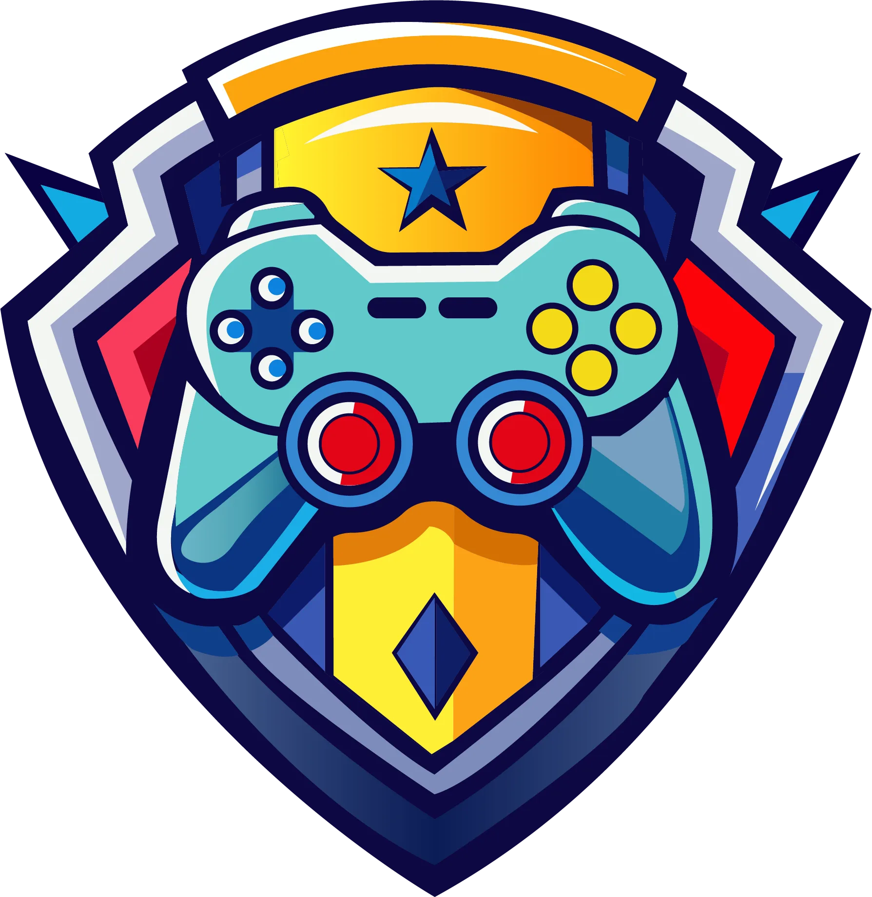
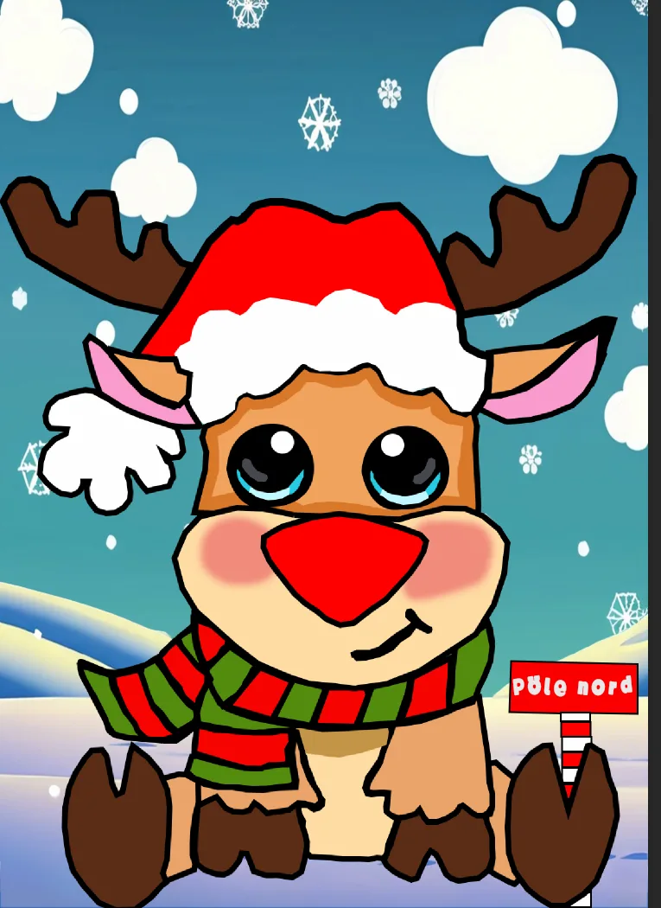
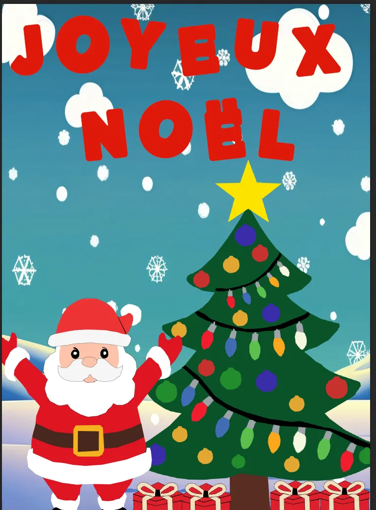
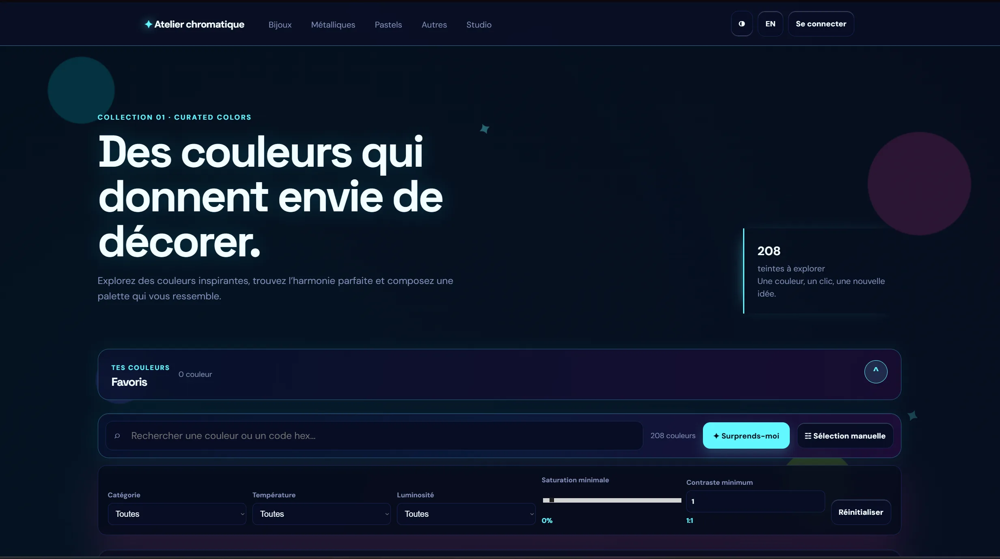

Animation & 3D
3D
Animation
MAYA
Rendu
Un générique de fin sombre où chaque élément renforce la tension et la dernière note dramatique de l'histoire.
// Réalisations
Un générique de fin sombre où chaque élément renforce la tension et la dernière note dramatique de l'histoire.

Un site web narratif qui plonge l'utilisateur dans une maison mystérieuse, où l'exploration et les choix déterminent le chemin à suivre.

Une illustration vectorielle de Stitch aux couleurs vives, construite avec des formes simples, des lignes nettes et une composition expressive.

Un logo en forme de bouclier conçu pour créer une identité visuelle forte, reconnaissable et adaptable sur des supports imprimés et numériques.


Une illustration vectorielle festive qui met en scène un sapin de Noël et un renne dans une composition colorée, structurée par des formes, des contrastes et une typographie chaleureuse.

Un site web expérimental consacré à l’exploration des couleurs, des formes et des compositions, pensé comme un atelier interactif où chaque écran devient une nouvelle expérience visuelle.